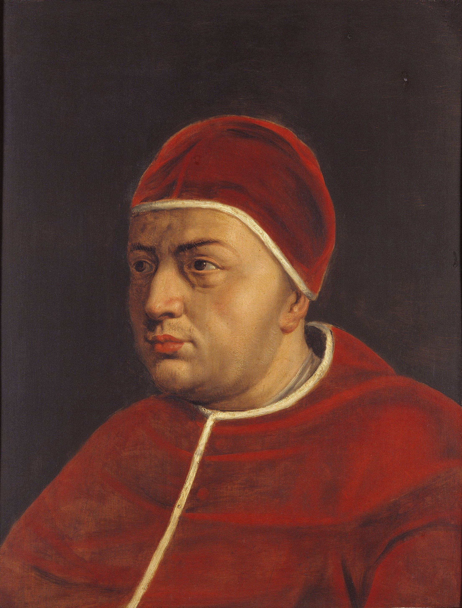

Michael Stifel
Michael Stifel
After being released from prison, Stifel was given a parish in Holzdorf, which was close to Annaberg, in 1535. At this time, he becam a serious mathematician, studying at Wittenberg University in the instructioon of Jacob Milich. Under the encouragement of Milich, Stifel began writing his own works. Withing the next twelve years he remained in Holzdorf, Stifel had written Arithmetica integra (1544), Deutsche arithmetica (1545), and Welsche Practick (1546). After complications resulting from the religious Schmalkaldic War, Stifel moved to Memel, Prussia in 1549 followed by Eichholz in 1550. He recieved a parish at Haberstroh in 1551 and started lecturing on mathematics and theology at the University of Konigsberg. After religous arguments from colleagues, Stifel returned to Saxony in 1554. He found his way to Jena and continued his lecturing at the University there. He remained here for the last years of his life, appearing in the register as one of the University's Masters and priests.
Below is a summarization of how Stifel determined that pope Leo X was the number 666 of the beast from the Book of Revelation:
"He used a method of obtaining a number from words which had been used by many before him. He took the letters of LEO DECIMVS which corresponded to Roman numerals and added these. Taking the sum of L, D, C, I, M, V gave him 1656 which did not mean much to Stifel. Then, since there are 10 letters in LEO DECIMVS and M is the first letter of 'mysterium' he realised that he should move the counter on the M of his counting board onto the X position. This gave him 666, the number of the beast as given in the Book of Revelation"
